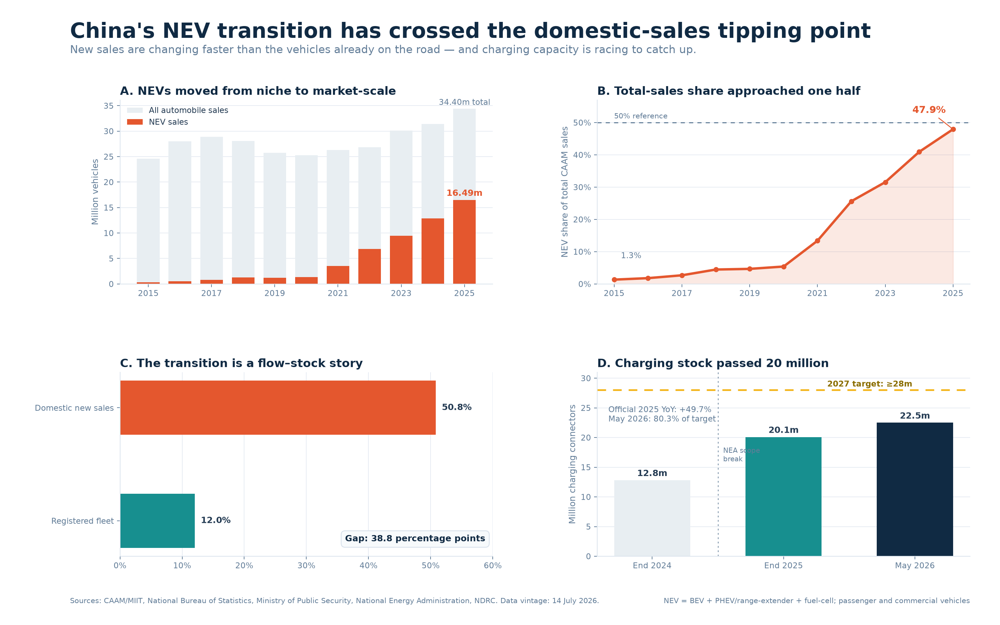
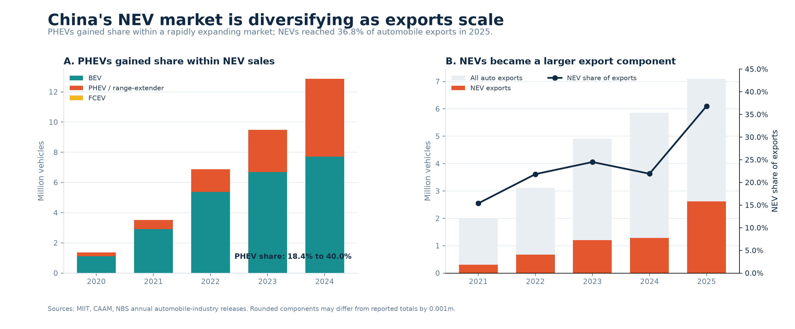
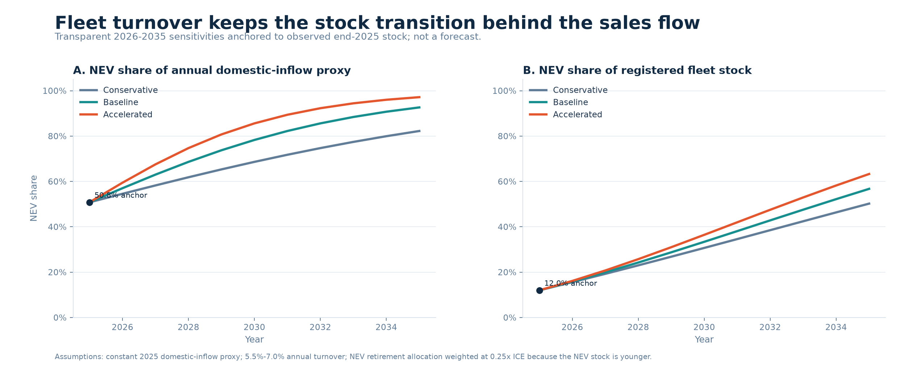

Past the Tipping Point, Not Yet Transformed
China’s NEV sales, fleet, and charging transition, 2015–2026
China’s automobile transition has crossed the domestic new-sales tipping point, but it has not yet transformed the vehicles already on the road.
50.8% NEV share of domestic new-vehicle sales in 2025
12.0% NEV share of the registered automobile fleet at end-2025
20.1m Charging connectors installed at end-2025
47.8% Compound annual growth of NEV sales, 2015–2025
The first two numbers deliberately use different denominators: one is a flow of new domestic sales and the other is a stock of registered automobiles. Their 38.8 percentage-point gap is the project’s main empirical story. The 50.8% domestic share is source-reported; dividing total CAAM NEV sales by total CAAM automobile sales gives a separate 47.9% share (Xinhua 2026b; Ministry of Industry and Information Technology 2026a).
Research question
How quickly is China’s dominance of new-energy vehicles in new-vehicle sales translating into the on-road fleet, and has charging infrastructure kept pace?
Three subquestions make this answerable:
- How did annual NEV sales and their share of the total automobile market change from 2015 to 2025?
- How large is the gap between the new-sales flow and the registered-fleet stock, and what does it mean?
- How quickly is charging capacity expanding, and how close is the connector stock to the official 2027 target?
- How are powertrain composition and exports changing the shape and geographic destination of NEV industry deliveries?
Evidence at a glance

Data and method
The annual market series combines CAAM’s historical charts and December statistical releases with official 2024 and 2025 summaries (China Association of Automobile Manufacturers 2021a, 2021b, 2022a, 2022b, 2023a, 2023b, 2024a, 2024b; Xinhua 2025; Ministry of Industry and Information Technology 2026a). Fleet observations come from national statistical and public-security reporting (National Bureau of Statistics of China 2025, 2026; Ministry of Public Security 2026). Charging observations and the 2027 target come from the National Energy Administration and National Development and Reform Commission (National Energy Administration 2025a, 2026a, 2026b; National Development and Reform Commission and others 2025).
The core mathematics is intentionally basic and inspectable:
\[ \text{NEV share}_t = \frac{\text{NEV sales}_t}{\text{total automobile sales}_t}\times 100 \]
\[ \text{YoY growth}_t = \left(\frac{x_t}{x_{t-1}}-1\right)\times 100 \]
\[ \text{CAGR} = \left(\frac{x_{end}}{x_{start}}\right)^{1/n}-1 \]
All derived indicators are rebuilt by scripts/build_analysis.py; the executed notebook shows the arithmetic and its outputs.
Definition discipline. “NEV” includes battery-electric, plug-in hybrid (including range-extender), and fuel-cell passenger and commercial vehicles. CAAM sales are not retail registrations; connectors are not charging stations; and partial-year observations are never appended to the complete annual series.
Findings
1. The market changed scale after 2020
NEV sales rose from 0.331 million in 2015 to 16.490 million in 2025, equivalent to a 47.8% ten-year CAGR. Total automobile sales did not grow at anything close to that rate. As a result, the NEV share of total CAAM sales rose from 1.3% to 47.9%.
| Year | Total auto sales (m) | NEV sales (m) | Derived NEV share |
|---|---|---|---|
| 2015 | 24.60 | 0.33 | 1.3% |
| 2020 | 25.31 | 1.37 | 5.4% |
| 2021 | 26.28 | 3.52 | 13.4% |
| 2023 | 30.09 | 9.50 | 31.6% |
| 2024 | 31.44 | 12.87 | 40.9% |
| 2025 | 34.40 | 16.49 | 47.9% |
The composition of growth is even more revealing. From 2024 to 2025, total automobile sales increased by 2.964 million, while NEV sales increased by 3.624 million. NEVs therefore accounted for 122.3% of net market growth; the residual estimate for non-NEV sales fell by 0.660 million. A contribution above 100% is mathematically possible because another component contracted.
2. Crossing 50% in sales does not mean half the fleet is electric
At end-2025, China had 43.97 million NEVs in a civilian automobile stock of 366.11 million, or approximately 12.0% (National Bureau of Statistics of China 2026). Public- security reporting gives the same 12.01% share and records 30.22 million BEVs, 68.74% of the NEV fleet (Ministry of Public Security 2026).
This resolves an apparent paradox. New sales can change quickly, but the fleet turns over slowly. The sales figure is a flow over one year; the fleet figure is the accumulation of many years of registrations, retirements, and vehicle lifetimes. The gap is not evidence of inconsistent data. It is the transition.
3. Charging growth is rapid, but the series has a documented break
The NEA reported 20.092 million connectors at end-2025: 4.717 million public and 15.375 million private. Private connectors were therefore 76.5% of the network. The stock implied 2.19 registered NEVs per connector, or 9.32 per public connector (National Energy Administration 2026a).
The agency reported 49.7% year-on-year connector growth in 2025. However, it also changed the statistical scope and introduced a new national reporting system during 2025 (National Energy Administration 2025b). This report therefore does not calculate a growth rate by dividing the old-scope end-2024 level by the revised-scope end-2025 level. The dashboard marks the break visibly.
By end-May 2026, the network had reached 22.497 million connectors, including 4.951 million public and 17.546 million private connectors (National Energy Administration 2026b). That was already 80.3% of the official end-2027 target of at least 28 million. Moving from the end-2025 level to 28 million in two years requires roughly 18.1% annual compound growth (National Development and Reform Commission and others 2025).
4. The latest pulse is strong but not an annual observation
In the first half of 2026, CAAM reported 7.446 million NEV sales. The H1 NEV share of total CAAM sales was 49.6%, while the single-month June share reached 58.5% (Xinhua 2026a; Ministry of Industry and Information Technology 2026b). Those numbers are current context, not an extra point on the 2015–2025 annual series.
5. PHEVs changed the mix while exports changed the destination

The market did not expand with a fixed powertrain mix. Between 2020 and 2024, reported BEV deliveries rose from 1.115 million to 7.719 million, while PHEV/range-extender deliveries rose from 0.251 million to 5.141 million. The PHEV share of reported NEV deliveries consequently increased from 18.4% to 40.0% (Ministry of Industry and Information Technology 2021; China Association of Automobile Manufacturers 2022b, 2023b, 2024b; National Bureau of Statistics of China Enterprise Survey Service 2025). Component sums reconcile to reported annual NEV totals within 0.001 million; the small differences reflect published rounding.
Exports also became material to interpretation of the industry-delivery series. Total automobile exports increased from 2.015 million in 2021 to 7.098 million in 2025, while NEV exports rose from 0.310 million to 2.615 million. NEVs therefore grew from 15.4% to 36.8% of automobile exports, and total exports rose from 7.7% to 20.6% of CAAM industry deliveries (Ministry of Industry and Information Technology 2022, 2023, 2024, 2025; China Association of Automobile Manufacturers 2026).
Subtracting enterprise-reported exports from industry deliveries gives a 2025 non-export residual NEV share of 50.8%, which closely matches the separately reported domestic new-vehicle share. This is a useful cross-check, not a replacement for the official domestic series: enterprise export reporting, industry deliveries, domestic retail sales, and customs declarations are different statistical systems.
Scenarios to 2030

A straight-line share projection can exceed 100%, so the scenario works in log-odds space:
\[ \operatorname{logit}(p_{t+h}) = \operatorname{logit}(p_t) + hg \]
The three values of \(g\) (0.15, 0.25, and 0.35) are explicit sensitivities, anchored to the observed 2025 total-sales share. They imply 2030 shares of about 67%, 76%, and 84%. These are illustrations, not probabilities or causal forecasts.
As a limited form check, a log-odds trend fitted only to 2015-2022 data was tested on 2023-2025. It underpredicted all three held-out observations, with absolute errors of 6.0, 6.5, and 3.5 percentage points and a 5.34 percentage-point mean absolute error. The backtest shows that even a bounded functional form can miss acceleration; it does not turn the sensitivity paths into validated forecasts.
Fleet-turnover sensitivities to 2035

The model begins with the observed end-2025 stock of 43.97 million NEVs in 366.11 million automobiles and the 2025 non-export residual proxy of 27.302 million vehicle inflows, 50.8% of them NEVs. Each scenario then applies the same auditable accounting identity:
\[ \text{ending stock} = \text{opening stock} + \text{inflow} - \text{retirements} \]
The annual domestic-inflow volume is held constant to isolate turnover and composition. Conservative, baseline, and accelerated bundles use annual total fleet-turnover rates of 5.5%, 6.0%, and 7.0%, paired with the same 0.15, 0.25, and 0.35 log-odds gains used in the sales-share sensitivities. Because China’s registered NEV stock is comparatively young, an NEV receives 0.25 times the near-term retirement-allocation weight of a non-NEV. Every rate and weight is stored in the machine-readable assumptions table, not hidden in the plotting code.
In the baseline, the NEV share of annual domestic inflow reaches 78.3% in 2030, but the NEV fleet share reaches only 33.4%. By 2035 the baseline figures are 92.6% of inflow and 56.7% of fleet stock. Across all three bundles, the 2035 fleet share ranges from 50.2% to 63.3% and total stock ranges from 378.5 million to 422.4 million vehicles.
These results quantify the flow-stock lag under explicit assumptions; they are not registration forecasts. The model has no vehicle-age cohorts, scrappage policy shocks, price response, or capacity constraints. Its value is that the stock-flow identities, anchors, and sensitivity levers are visible and tested.
What this project does not claim
- It does not claim that charging construction caused NEV adoption.
- It does not mix CAAM sales with passenger-car retail data or registrations.
- It does not treat the 2026 partial-year pulse as a completed year.
- It does not hide the 2025 charging methodology break.
- It does not average conflicting NBS and CAAM production totals.
- It does not present the fleet-turnover sensitivities as registration forecasts.
Reproducibility
From the repository root, Windows users can run .\scripts\rebuild.ps1. The equivalent cross-platform commands are:
uv sync --frozen --python 3.12
uv run --frozen python scripts/build_analysis.py
uv run --frozen python scripts/build_notebook.py
uv run --frozen python -m nbconvert --to notebook --execute --inplace notebooks/01_exploration.ipynb --ExecutePreprocessor.timeout=120
uv run --frozen python -m unittest discover -s tests -v
quarto render
uv run --frozen python scripts/validate_project.pyThe source register records publisher, title, date, retrieval date, URL, coverage, and definition notes. The notebook is committed with executed outputs; the Quarto source and rendered HTML are both included for inspection.
Remaining roadmap
- Build a consistent monthly charging series from June 2025 onward.
- Replace aggregate turnover sensitivities with age-cohort survival modeling when suitable registration cohorts become available.
- Add destination-level export analysis only if a stable official series can be sourced without mixing customs and enterprise-reporting definitions.